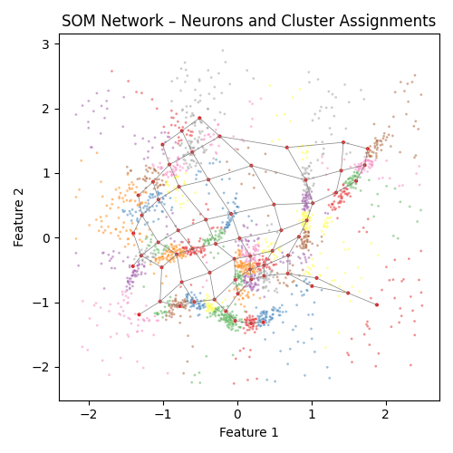
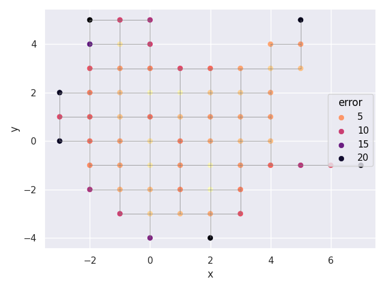
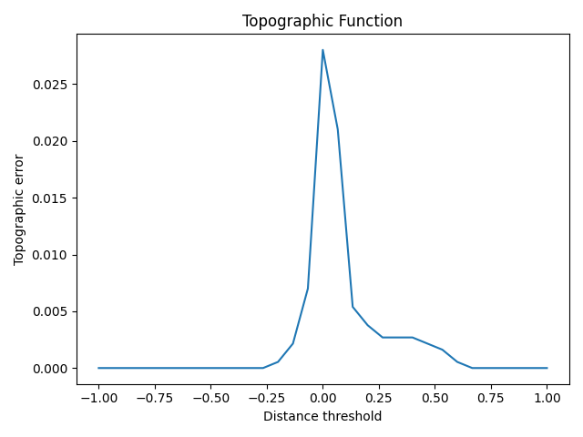

Note
Go to the end to download the full example code.
2D Clustering with SomVQ¶
Demonstrates unsupervised clustering on synthetic 2D data using SomVQ.
Because the data is 2-dimensional, both the input points and the learned
neuron positions can be visualized in the same space.
Train SomVQ¶
SomVQ is the unsupervised variant of DBGSOM — no class labels needed.
Key hyperparameters:
spreading_factor=0.9: controls lateral network growth (lower = more compact)max_neurons=200: upper bound on neuron countsigma_end=0.9: neighborhood radius at end of training
from pathlib import Path
import matplotlib.pyplot as plt
import numpy as np
import seaborn as sns
from sklearn.preprocessing import scale
from dbgsom.SomVQ import SomVQ
data = scale(np.load(Path("data") / "clusterable_data.npy"))
som = SomVQ(
n_iter=500,
spreading_factor=0.9,
sigma_end=0.9,
random_state=32,
max_neurons=200,
)
som.fit(data)
Network Visualization¶
Input data colored by cluster assignment; gray lines show neuron connections.
edges = list(som.som_.edges)
weights = som.weights_
fig, ax = plt.subplots(figsize=(5, 5))
for edge in edges:
ax.plot(
[
som.som_.nodes().data()[edge[0]]["weight"][0],
som.som_.nodes().data()[edge[1]]["weight"][0],
],
[
som.som_.nodes().data()[edge[0]]["weight"][1],
som.som_.nodes().data()[edge[1]]["weight"][1],
],
color="gray",
linewidth=0.5,
)
sns.scatterplot(
ax=ax,
x=data[:, 0],
y=data[:, 1],
s=4,
alpha=0.5,
hue=som.predict(data),
palette="Set1",
legend=False,
)
sns.scatterplot(
ax=ax,
x=weights[:, 0],
y=weights[:, 1],
hue=[1] * len(som.neurons_),
palette="Set1",
s=10,
legend=False,
)
ax.set_title("SOM Network – Neurons and Cluster Assignments")
ax.set_xlabel("Feature 1")
ax.set_ylabel("Feature 2")
plt.tight_layout()
plt.show()

Quantization Error per Neuron¶
Each neuron colored by mean quantization error — higher error (darker) indicates regions where data density is not well represented.
som.plot(color="error").show()

Topographic Function¶
Topographic error as a function of distance threshold. Lower values indicate better topology preservation.
te = som.topographic_function(data)
fig, ax = plt.subplots()
ax.plot(te[1], te[0])
ax.set_xlabel("Distance threshold")
ax.set_ylabel("Topographic error")
ax.set_title("Topographic Function")
plt.tight_layout()
plt.show()

Total running time of the script: (0 minutes 0.621 seconds)